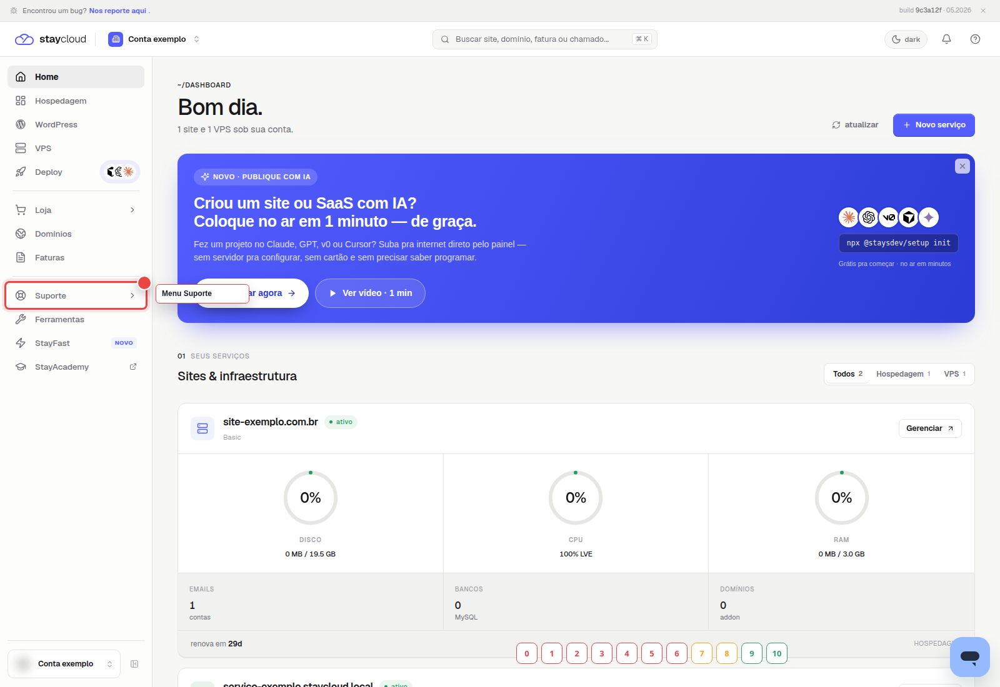
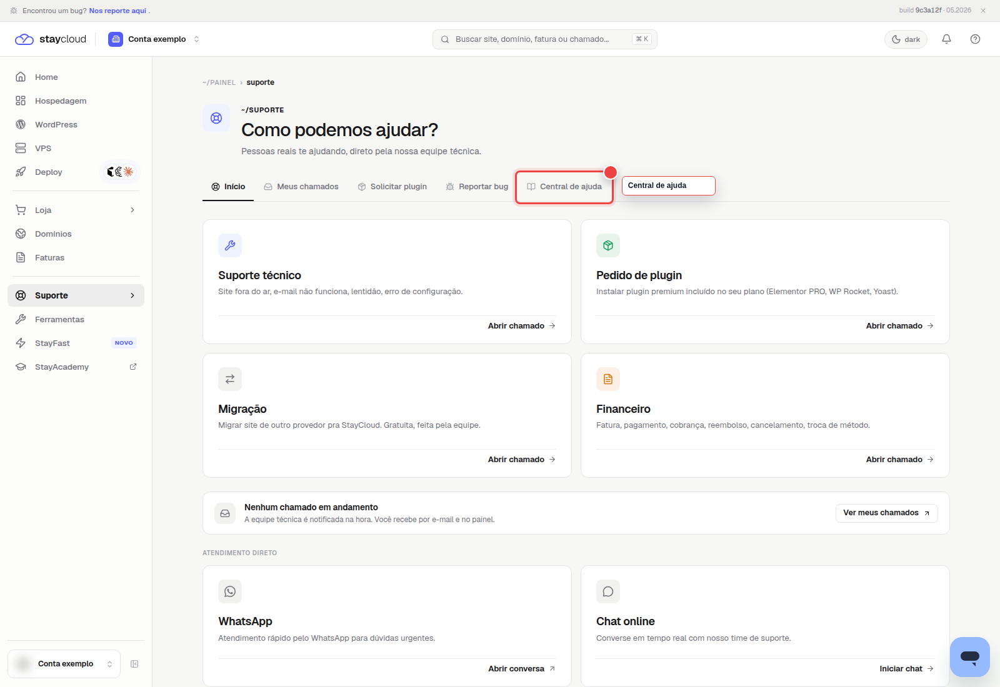
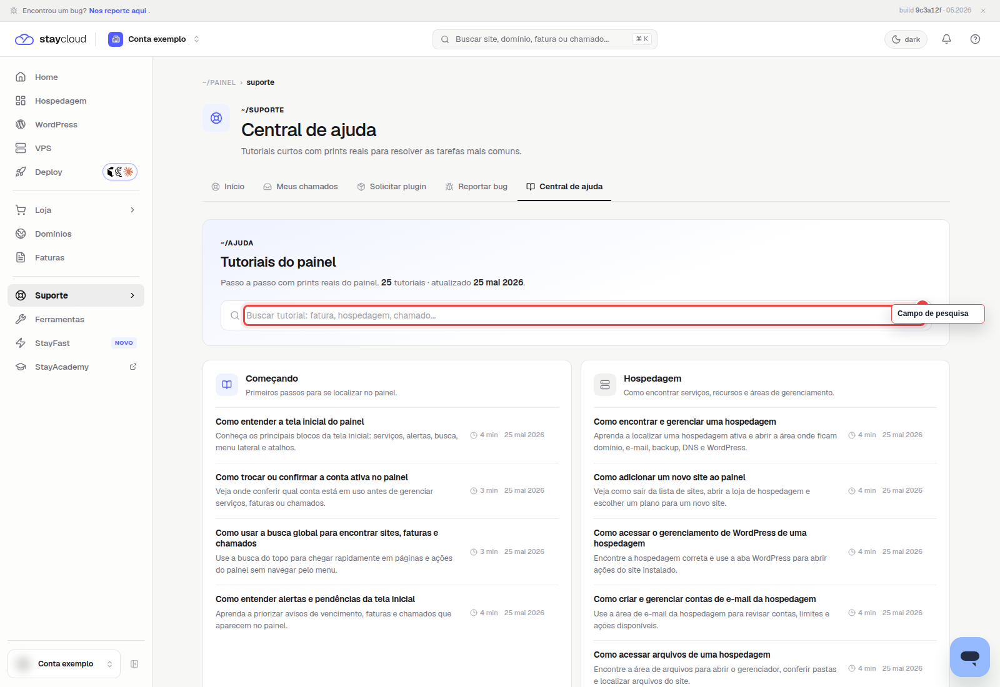

Como localizar a Central de Ajuda pelo Painel Novo da StayCloud
A Central de Ajuda StayCloud fica dentro da área de Suporte do Painel Novo e reúne tutoriais para orientar tarefas comuns da conta. Use este caminho quando quiser pesquisar uma dúvida antes de abrir um chamado ou quando precisar encontrar rapidamente uma orientação sobre painel, hospedagem, e-mail, domínios ou atendimento.
Neste tutorial, você vai ver onde acessar o menu Suporte, como selecionar a opção Central de ajuda e onde pesquisar um assunto dentro da base de tutoriais do painel.
Quando usar a Central de Ajuda StayCloud
Use a Central de Ajuda StayCloud quando quiser consultar uma orientação antes de acionar a equipe de suporte. Ela ajuda principalmente em dúvidas de navegação, localização de recursos e entendimento de áreas do Painel Novo.
Esse caminho é útil quando você sabe o assunto que deseja pesquisar, mas ainda não sabe qual tutorial pode ajudar. Se a orientação disponível não resolver a necessidade, você ainda pode abrir um chamado pelo painel.
Antes de começar
- Acesse o Painel Novo da StayCloud.
- Confirme que está na conta correta antes de pesquisar.
- Identifique o assunto que deseja localizar, como fatura, hospedagem, chamado, domínio ou e-mail.
- Não envie senha, token, documento ou dado sensível em pesquisas.
Como localizar a Central de Ajuda StayCloud
1. Abra a área de Suporte
No menu lateral esquerdo do Painel Novo, localize a opção Suporte. É nessa área que ficam os caminhos de atendimento, acompanhamento de chamados e consulta à base de tutoriais.

2. Selecione Central de ajuda
Na tela de Suporte, procure a opção Central de ajuda. Ela aparece junto de outras opções, como Meus chamados, Solicitar plugin e Reportar bug. Para este tutorial, use somente a opção Central de ajuda.

3. Pesquise o assunto desejado
Depois de abrir a Central de ajuda, use o campo de busca para digitar o assunto que você quer encontrar. Você pode pesquisar por termos como fatura, hospedagem, chamado, domínio, e-mail ou outra palavra relacionada à sua dúvida.

O que você encontra na Central de Ajuda
A Central de Ajuda reúne tutoriais curtos para orientar tarefas comuns no painel. Na tela validada, a base mostra tutoriais do painel e organiza conteúdos sobre primeiros passos, hospedagem, chamados, faturas e outras áreas de uso frequente.
Alguns temas também possuem artigos públicos relacionados na base da StayCloud, como o tutorial de como abrir ticket no painel StayCloud e o guia para acompanhar chamados StayCloud pelo painel.
Para conhecer a empresa e seus serviços fora da base de tutoriais, acesse também o site oficial da StayCloud.
O que fazer quando não encontrar uma resposta
Se a pesquisa não trouxer uma orientação adequada, tente usar termos mais específicos. Em vez de pesquisar apenas por suporte, por exemplo, pesquise por chamado, fatura, e-mail ou hospedagem.
Quando o conteúdo disponível não resolver a necessidade, abra um chamado com a equipe. Antes disso, confira se já existe atendimento em andamento para evitar solicitações duplicadas.
Erros comuns ao localizar a Central de Ajuda
- Procurar a Central de Ajuda fora da área de Suporte.
- Clicar em Meus chamados em vez de Central de ajuda.
- Pesquisar usando termos muito genéricos.
- Estar em outra conta e não encontrar o contexto esperado.
- Não aguardar a página carregar antes de usar o campo de busca.
Dúvidas frequentes sobre a Central de Ajuda StayCloud
Preciso abrir um chamado para acessar os tutoriais?
Não. Você pode acessar a Central de Ajuda StayCloud pelo Painel Novo e pesquisar os tutoriais disponíveis sem abrir um chamado.
A Central de Ajuda altera alguma configuração da minha conta?
Não. A Central de Ajuda é uma área de consulta. Pesquisar ou abrir um tutorial não altera hospedagem, domínio, fatura, e-mail ou qualquer configuração da conta.
O que fazer quando não encontro o assunto desejado?
Tente pesquisar com uma palavra mais específica. Se mesmo assim não encontrar a orientação, use a área de Suporte para abrir um chamado e explicar o que precisa resolver.
Conclusão
Agora você sabe como localizar a Central de Ajuda StayCloud pelo Painel Novo. Acesse Suporte, selecione Central de ajuda e use o campo de pesquisa para encontrar tutoriais antes de abrir um chamado.
Para conhecer outras áreas do painel, veja também o tutorial sobre como encontrar as ferramentas no Painel StayCloud.
SEO Rank Math
Score mínimo: 80/100
Status: Publicado e SEO validado no Rank Math
Palavra-chave principal: Central de Ajuda StayCloud
Chip ativo: confirmado no Rank Math.
Título SEO: Central de Ajuda StayCloud: como acessar pelo Painel Novo
Slug: central-de-ajuda-staycloud
Meta description: Aprenda a localizar a Central de Ajuda StayCloud pelo Painel Novo, pesquisar tutoriais e encontrar rapidamente orientações para sua conta e serviços.
Excerpt: Acesse a Central de Ajuda StayCloud pelo Painel Novo e encontre tutoriais para solucionar dúvidas sobre sua conta e seus serviços.
Categoria: Painel novo
Tags: Central de Ajuda; Painel Novo; Suporte; StayCloud; Base de Conhecimento
Score Rank Math: 84/100
Pendências: nenhuma pendência bloqueante.